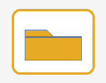

Walidacja strony HTML
Arsenii
Arsenii
Arsenii
Arsenii
Arsenii
Arsenii
Arsenii
Kratsylo
Kratsylo
Kratsylo
Kratsylo
Kratsylo
Kratsylo
😊 - zadowolona twarz
😍 - twarz z oczami w kształcie serca
😒 - niezadowolona twarz
😎 - uśmiechnięta twarz z okularami przeciwsłonecznymi
🤩 - zafascynowana twarz
😢 - płacząca twarz
Adres: 80-410,
Wrzeszcz Gdański,
Lwowska,
1,1b
ulubiony aktor: Jim Carrey
Ulubiony zespół muzyczny:
QUEEN.
Data urodzenia: 22 września 1999.
H2SO4
x*x = x2
nazwisko ucznia
imię ucznia
Kratsylo
Arsenii
★ ♥ ♦ ♣ ☺ ☼ ♪

Grafika 4 — po lewej stronie.
Zadanie 4
poniżej są trzy wyliczenia z różnymi znakami wyliczenia
Ty zaproponuj swoje, związane z informatyką
Możliwości formatowania tekstu w HTML.
- Pogrubienie: <b> </b>
- Kursywa: <i> </i>
- Podkreślenie: <u> </u>
- Przekreślenie: <del> </del>
- Indeks górny: 210 = 1024
- Indeks dolny: x1, x2, x3
- Przejście do nowego wiersza: <br>
- Spacja niełamiąca:
poniżej są trzy numerowania z różnymi znakami numerowania
Ty zaproponuj swoje, związane z informatyką
Nagłówki w treści strony WWW.
- <H1> - będzie największym nagłówkiem
- <H2> - <H5> będą coraz mniejsze
- <H6> - będzie najmniejszym nagłówkiem
Możliwość funkcji font().
- <font size="wielkość czcionki">
- <font color="kolor czcionki">
- <font face="rodzaj czcionki">
3 Najprostsze rodzaje kolorów do użycia w funkcji font.
-
Nazwa: czerwony - red,
zielony - green,
niebieski - blue
-
RGB: rgb(255,0,0) - czerwony,
rgb(0,255,0) - zielony,
rgb(0,0,255) - niebieski
-
Hexadecymalny:
#FF0000 - czerwony,
#00FF00 - zielony,
#0000FF - niebieski
Grafika 5 — po prawej stronie.